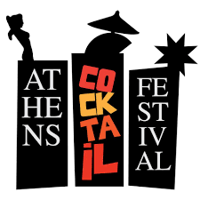
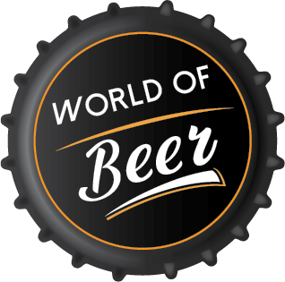

Food & Drink
1. Athens Street Food Festival

Mουσική, γέλια, ποτά και λαχταριστές μυρωδιές να σκάνε από παντού. Από το 2016 κάθε Μάιο το Παλιό Αμαξοστάσιο του ΟΣΥ στο Γκάζι γεμίζει με χιλιάδες foodies που επισκέπτονται το μεγαλύτερο φεστιβάλ φαγητού της χώρας που καθιερώνει τα trends του «φαγητού του δρόμου». Από την Παρασκευή 10, το Σάββατο 11 και την Κυριακή 12 Μαΐου 2024 (αλλά και για τα άλλα δυο τριήμερα του Μαΐου 17-18-19, 24-25-26)στο Athens Street Food Festival 2024 θα δοκιμάσετε απίθανες και αποκλειστικές νέες γεύσεις από το Βιετνάμ, το Μεξικό, την Ονδούρα, την Ιαπωνία, την Αιθιοπία, την Ταϊλάνδη, την Ινδία, την Ουγγαρία, την Ιταλία, τη Μεγάλη Βρετανία, τις Ηνωμένες Πολιτείες και φυσικά την Ελλάδα αλλά και ιδιαίτερους συνδυασμούς εδεσμάτων -χωρίς ενοχές που δεν θα βρείτε πουθενά αλλού!
Athens Street Food Festival 2024: Τι θα δούμε στο μεγαλύτερο φεστιβάλ φαγητού
- Πάνω από 100.000 foodies δίνουν το καθιερωμένο παρών, μπροστά στους πάγκους των πιο δημιουργικών street food vendors από όλη την Ελλάδα, που έχουν καθιερώσει πλέον το πέρασμά τους από την Αθήνα για να παρουσιάσουν τα νέα τους γαστρονομικά επιτεύγματα.
- Φυσικά, το Athens Street Food Festival σημαίνει και φεστιβαλική ατμόσφαιρα! Κάθε μέρα τη μουσική θα αναλαμβάνουν γνωστοί ραδιοφωνικοί παραγωγοί, ενώ κάθε βράδυ στις 21:00 θα ξεκινάει μεγάλο πάρτυ με γνωστούς DJs.
- Φυσικά δεν θα μπορούσαν να λείπουν οι καταξιωμένοι chefs που ηγούνται της Αναγέννησης του ελληνικού φαγητού που βιώνουμε τα τελευταία χρόνια: Αλέξανδρος Τσιοτίνης (αστέρι Michelin), Γρηγόρης Κίκης (αστέρι Michelin) και η Madame Ginger αλλά και οι “άγνωστοι” chefs που έχουν κάτι μοναδικό να προτείνουν.
2. 2o Athens Green Festival

Αγαπάτε τις παραδοσιακές γεύσεις;
Φροντίζετε την υγεία και διατροφή σας;
Προτιμάτε τα βιολογικά προϊόντα;
Nοιάζεστε για το περιβάλλον;
Είστε gourmet τύπος ;
Αν είστε ένας από τους παραπάνω τύπους, μη χάσετε το
ATHENS GREEN FESTIVAL το ποιο νόστιμο και υγιεινό φεστιβάλ της Αθήνας.
Παρασκευή, Σάββατο και Κυριακή 7, 8 και 9 Ιουνίου 2024 στο Ζάππειο. Ελάτε να γνωρίσετε τον πλούτο της Ελληνικής γης και να δοκιμάσετε ΕΛΛΗΝΙΚΕΣ ΓΕΥΣΕΙΣ.
Η ΕΚΘΕΣΗ ΠΕΡΙΛΑΜΒΑΝΕΙ ΤΟΥΣ ΠΑΡΑΚΑΤΩ ΤΟΜΕΙΣ
- Ελληνικές γεύσεις και παραδοσιακά προϊόντα από Έλληνες παραγωγούς
- Βιολογικά προϊόντα διατροφής και καλλυντικά
- Οικολογικά προϊόντα (είδη υγιεινής, ρούχα, απορρυπαντικά, είδη προσωπικής περιποίησης, είδη σπιτιού κλπ)
- Προϊόντα Υγείας και Ευεξίας- super foods- Συμπληρώματα διατροφής
ΟΡΓΑΝΩΣΗ
Η έκθεση διοργανώνεται από την εφημερίδα ΥΓΕΙΑ ΕΥΕΞΙΑ, που για 20 χρόνια έχει τα ηνία στην ενημέρωση των αναγνωστών σε θέματα υγιεινής διατροφής, και την προώθηση του οικολογικού τρόπου ζωής.
3. Taste Of Athens

To Taste Of Athens ήταν πιο νόστιμο από ποτέ
0 κορυφαία εστιατόρια, 34 μοναδικά πιάτα, μουσική, live cooking, παρουσιάσεις, καλοκαιρινή διάθεση και αμέτρητα χαμόγελα ήταν το "μενού" του μεγαλύτερου γαστρονομικού event της πόλης!
4 ημέρες απόλαυσης
Το Taste of Athens επέστρεψε στο Ζάππειο, στην καρδιά του καλοκαιριού.
10 από τα καλύτερα εστιατόρια της χώρας, κορυφαίοι chef, εμβληματικά πιάτα και ένα γεμάτο πρόγραμμα μουσικής και διασκέδασης, προσέφεραν στους 12.000+ επισκέπτες 4 ημέρες γεμάτες γεύση, διασκέδαση και απόλαυση!
4. 3nd Athens Cocktail Festival

Με πολύ μεγάλη χαρά θα θέλαμε να σας ανακοινώσουμε την διοργάνωση του 3ου ATHENS COCKTAIL FESTIVAL.
Το μεγαλύτερο event του Spirit Industry στην Ελλάδα που απευθύνεται σε καταναλωτές.
Στην πιο φαντασμαγορική βεράντα με την ομορφότερη θέα σε όλη την Αθήνα, οι επισκέπτες θα έχουν την δυνατότητα να επιλέξουν τα ποτά τους ανάμεσα σε 22 διαφορετικά bars με περισσότερα από 44 διαφορετικά cocktail.
5. Athens Coffee Festival

Το κομβικό σημείο συνάντησης για τους επαγγελματίες και τους λάτρεις του καφέ
- Το ATHENS COFFEE FESTIVAL είναι μία μεγάλη γιορτή για τον καφέ και την κουλτούρα του, η οποία απευθύνεται εξίσου στους επαγγελματίες του κλάδου, τους home barista, αλλά και το ευρύ καταναλωτικό κοινό!
- Το Athens Coffee Festival δημιουργεί τις τάσεις στον καφέ από το 2016, έχει ταυτιστεί με την αναβάθμιση του προϊόντος του καφέ και της καφεστίασης και κάθε χρόνο έρχεται στην Τεχνόπολη Δήμου Αθηναίων με στόχο να αναδείξει νέα προϊόντα, λύσεις και προτάσεις που αναζητά ο σύγχρονος επαγγελματίας του κλάδου.
Κατηγορίες εκθεμάτων
- Espresso blends
- Mονοποικιλιακοί καφέδες
- Single origin, single estate, speciality coffees
- Kαφέδες σε κάψουλες ή pods
- Ελληνικοί καφέδες
- Ποικιλίες πράσινου καφέ
- Τσάι & ροφήµατα
- Γάλα & σιρόπια για καφέ
World of Beer Festival

Χιλιάδες beer enthusiasts όπως εσύ, θα συναντηθούν για τρείς ημέρες για να ανακαλύψουν 400+ ετικέτες μπίρας από τις καλύτερες ζυθοποιίες της Ελλάδας και του εξωτερικού, να γευτούν σπάνιες ετικέτες, να ανακαλύψουν μικροζυθοποιίες που εμφιαλώνουν με όρεξη και μεράκι, να γνωρίσουν δεκάδες craft μπίρες υψηλού επιπέδου..
- Lager
- Weiss
- Pils
- Dinkel
- Trappist
- Draught
- Αbbey